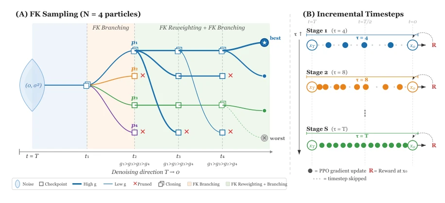
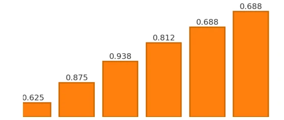
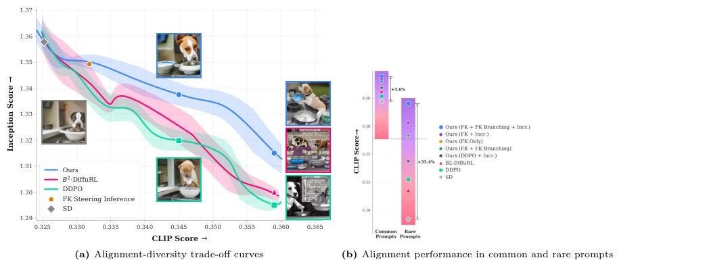
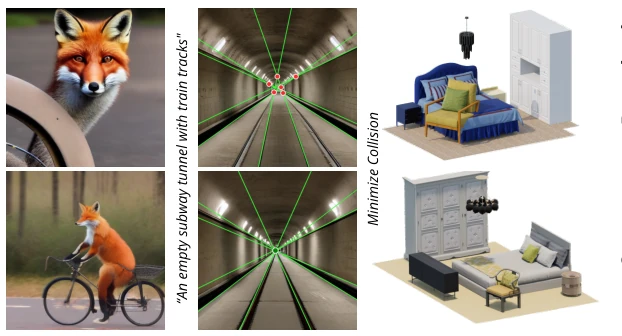
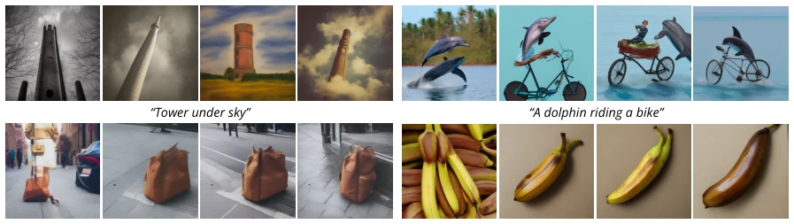
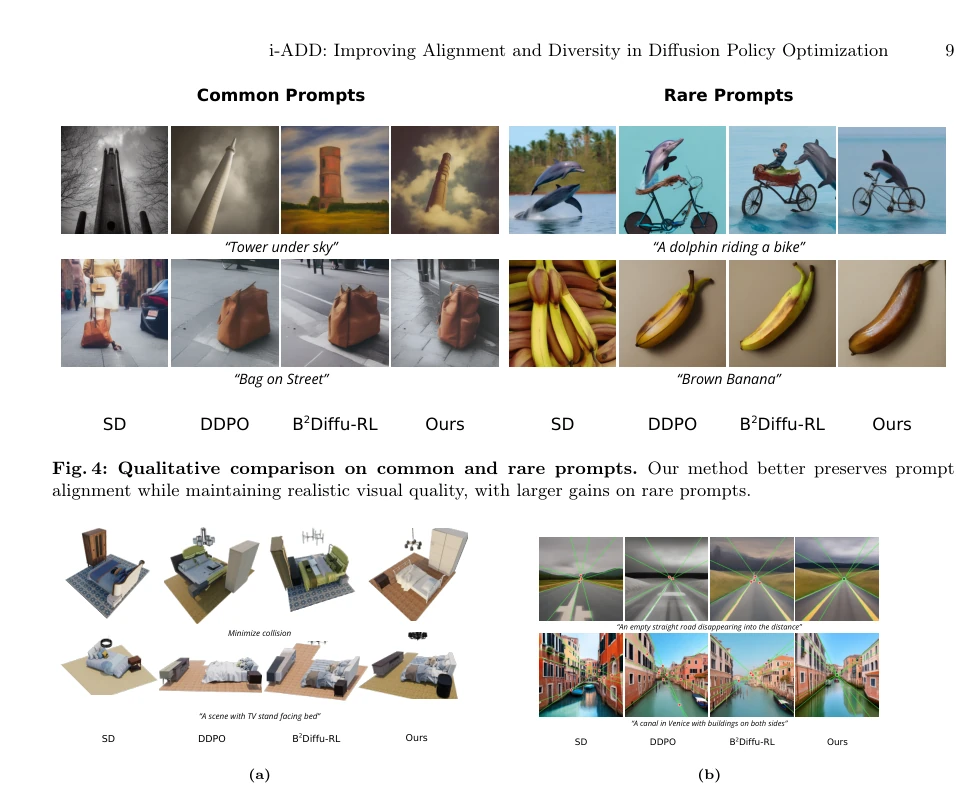
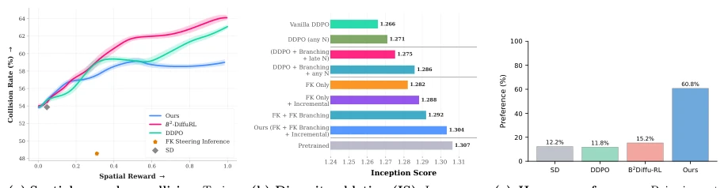

This paper offers a "weight-loss drug" for diffusion policy optimization. RL fine-tuning methods such as DDPO [4] and B2-DiffuRL [28], in order to align rewards, often sacrifice diversity; generated images are either cartoonish or oversaturated, a typical "shameless for the sake of alignment." The iADD authors are quite rigorous; not only did they implement Feynman-Kac path guidance, but they also theoretically rebutted the popular view of "updating only late timesteps," proving that early updates preserve diversity. Although it does not directly apply to robots, this RL+Diffusion optimization logic is still instructive for policy learning in embodied intelligence. However, FK branching is computationally heavy, and inference latency could explode; the authors did not mention this much, so engineering deployment likely requires reducing particle counts. Overall, it is a theoretically solid but potentially "heavy" engineering solution, suitable for scenarios with quality purism; do not expect it to run fast, but the effect is indeed stronger than those "pie in the sky" methods.
During diffusion model fine-tuning, RL optimization often falls into the dilemma of "alignment leads to collapse." Existing methods like DDPO [4] update all timesteps uniformly, leading to mode collapse; B2-DiffuRL [28] believes updating late timesteps is more reliable, updating only the tail, but this sacrifices generative ability, causing rare prompts to fail. DPOK [14] uses KL regularization, but relies on preference data, making offline policies hard to scale. The core question is: how to improve alignment while preserving the volume of the prior distribution under sparse terminal rewards? The authors point out that updating only late timesteps breaks the volume preservation (Volume Preservation) of the target distribution, leading to decreased diversity. Therefore, a new strategy that balances early intervention and structural regularization is needed, especially when handling rare prompts (Rare Prompts), where existing methods often fail, unable to satisfy constraints while maintaining realism, requiring theoretical support to guide timestep selection, avoiding the model losing the volume of the original distribution during optimization.
The iADD framework contains two core modules. First is the Incremental Timestep Curriculum (Incremental Timestep Curriculum). Unlike DDPO's full update or B2-DiffuRL's update only of late stages, iADD starts training from sparse early high-leverage timesteps, gradually expanding the update range with iterations. Theoretical proof shows early updates maximize generative reach (Generative Reach), while sparse updates better preserve probability volume, preventing model overfitting to rewards and avoiding excessive contraction of the Jacobian determinant. Second is Feynman-Kac (FK) path guidance. During training, particle filters are used to evaluate path potential. By defining a non-negative potential sequence, unnormalized path weights are calculated. Through FK Branching, high-potential particles are copied; through FK Pruning, low-potential paths are pruned, guiding denoising trajectories to high-reward areas. This solves the low sample efficiency problem caused by sparse terminal rewards. The overall flow is: pretrained model initialization -> incremental timestep RL optimization -> FK path reweighting and branching -> output aligned and diverse samples. This combination utilizes the global exploration capability of early gradients, while maintaining diversity in local optimization through the FK mechanism, forming a closed loop, ensuring the volume of the original prior distribution is not lost during optimization, achieving the best balance between reward and diversity.

Fig. 3: Overview of FK Sampling and Incremental Timestep Training. (A) FK Sampling: Our approach employs a Feynman-Kac (FK) particle filter for sampling. Starting from Gaussian noise at t = T, trajectories (p1, . . . , p4) are evaluated at discrete checkpoints tn based on their potentials g. The FKBranching mechanism duplicates high-potential particles while pruning low-potential ones, effectively redirecting the stochastic denoising paths toward regions of higher expected reward. (B) Incremental timestep updates: During training, we utilize a progressive stage-wise strategy where the cardinality of the updated timesteps S increases.

Fig. 6: Empirical validation of the timestep analysis. Left: cumulative ∥δx0∥advantage of uniform over late-only updates across training stages (Prop. 1). Right: full-Jacobian log-determinant for dense and sparse updates; the less-negative value indicates better volume preservation under sparse optimization (Prop. 2).
实验Experiments
实验覆盖图像生成、消失点校正和 3D 场景合成三任务。基线包括 DDPO [4]、B2-DiffuRL [28] 及 GRPO 变体。指标含 CLIP Score、Inception Score (IS)、Rarity 等。结果上，iADD 在同等奖励下 IS 更高，且罕见提示成功率（Rarity）显著优于基线（如 3D 任务中碰撞率更低，奖励 0.7763 vs 0.6815）。消融实验证实，增量时间步和 FK 分支均对多样性有贡献，单独 FK 仅提升对齐。与 DanceGRPO 等相比，iADD 在多样性-奖励 AUC 上更优。虽然推理需多粒子采样，但训练效果确实稳，人类评估也偏好其真实感，证明方法有效。LPIPS 指标也显示 iADD 在视觉变化上更丰富，证明了其在保持语义一致性的同时提供了更好的样本多样性，特别是在罕见条件下表现突出。
Experiments cover three tasks: image generation, vanishing point correction, and 3D scene synthesis. Baselines include DDPO [4], B2-DiffuRL [28], and GRPO variants. Metrics include CLIP Score, Inception Score (IS), Rarity, etc. In results, iADD has higher IS at the same reward, and rare prompt success rate (Rarity) is significantly better than baselines (e.g., lower collision rate in 3D task, reward 0.7763 vs 0.6815). Ablation experiments confirm that incremental timesteps and FK branching both contribute to diversity, while FK alone only improves alignment. Compared to DanceGRPO, etc., iADD is superior in Diversity-Reward AUC. Although inference requires multi-particle sampling, the training effect is indeed stable, and human evaluation also prefers its realism, proving the method effective. The LPIPS metric also shows iADD is richer in visual changes, proving it provides better sample diversity while maintaining semantic consistency, especially performing outstandingly under rare conditions.

Fig. 1: Performance in alignment and diversity. (a) Our method, iADD, achieves a higher CLIP Score at any given diversity level compared to other methods. Notably, as reward increases, competing methods (DDPO and B2-DiffuRL) produce increasingly cartoonish, over-saturated outputs, whereas our method preserves photorealis- tic quality throughout training. The visualized images are for the prompt “a dog washing dishes”. (b) Alignment performance on common and rare prompts, evaluated at constant Inception Score(IS) for each method. Rare prompts represent conditions that inherently yield low-reward outcomes under the pretrained model.

Fig. 2: Versatility across diverse generation tasks.

Fig. 4: Qualitative comparison on common and rare prompts. Our method better preserves prompt alignment while maintaining realistic visual quality, with larger gains on rare prompts.

Fig. 5: Qualitative results. (a) 3D scene synthesis. Top: collision reward. Bottom: spatial reward (“TV stand facing bed”). DDPO and B2-DiffuRL satisfy constraints but introduce collisions; our method avoids them. (b) Vanishing-point correction. Red: off-vanishing intersections; green: vanishing point. DDPO and B2-DiffuRL shows weaker convergence and desaturation; our method preserves quality while enforcing perspective. (Better viewed zoomed.)

Fig. 7: Additional quantitative results. Our method achieves fewer collisions at matched spatial reward in 3D scene synthesis, improves diversity in the ablation study, and is preferred by human raters over DDPO and B2-DiffuRL.